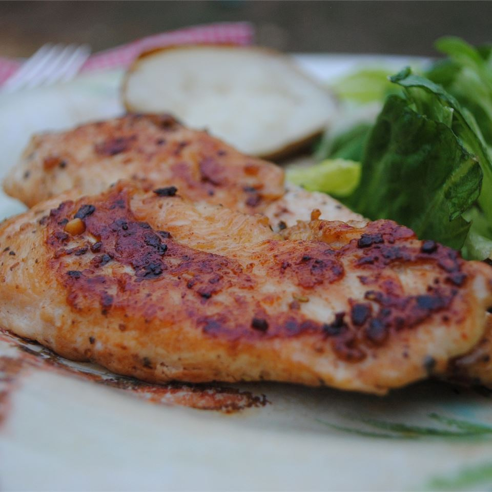

Garlic Chicken

Description
Sprinkle chicken breasts with garlic powder, onion powder and seasoning salt - then sautee and enjoy. Couldn't be easier! Great recipe for quick and easy meal, even for the pickiest eater!
Ingredients
- 3 tablespoons butter
- 4 skinless, boneless chicken breast halves
- 2 teaspoons garlic powder
- 1 teaspoon seasoning salt
- 1 teaspoon onion powder
Directions
- Melt butter in a large skillet over medium high heat.
- Add chicken and sprinkle with garlic powder, seasoning salt and onion powder.
- Saute about 10 to 15 minutes on each side, or until chicken is cooked through and juices run clear.
Return to Homepage